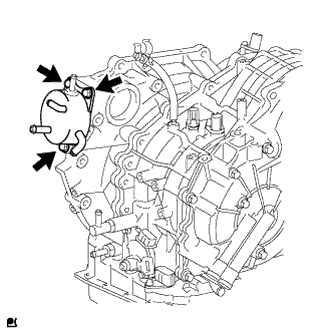

Transmission Oil Cooler Assembly Removal |
| 1. Remove Engine Under Cover NO.1 |
Remove the 6 bolts and 7 clips, and remove the engine under cover No.1.
| 2. Drain Coolant (Toyota Genuine Super Long Life Coolant) |
Loosen the radiator drain cock plug.
Remove the radiator cap and drain the coolant.
Loosen the cylinder block drain cock plug and drain the coolant from the engine.

| 3. Drain CVT Fluid |
Using a socket hexagon wrench 10, remove the drain plug and gasket, and drain the fluid.
Using a socket hexagon wrench 10, tighten the drain plug with a new gasket.
| 4. Remove Radiator Upper Air Deflector |
Remove the 8 clips and the radiator upper air deflector.
| 5. Disconnect Radiator Inlet Hose |
 |
Slide the clamp and disconnect the radiator inlet hose.
| 6. Disconnect Water Bypass Hose |
 |
Remove the 4 clamps and disconnect the 2 water bypass hoses from the oil cooler.
| 7. Remove Oil Cooler Hose |
 |
Remove the 4 clamps and remove the 2 oil cooler hoses from the oil cooler.
| 8. Remove Oil Cooler |
 |
Remove the 3 bolts and remove the oil cooler.